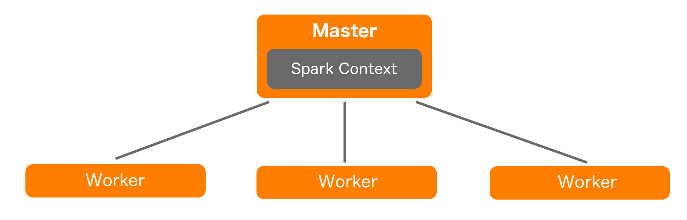
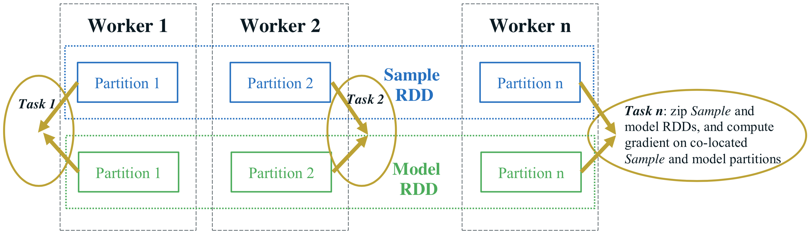
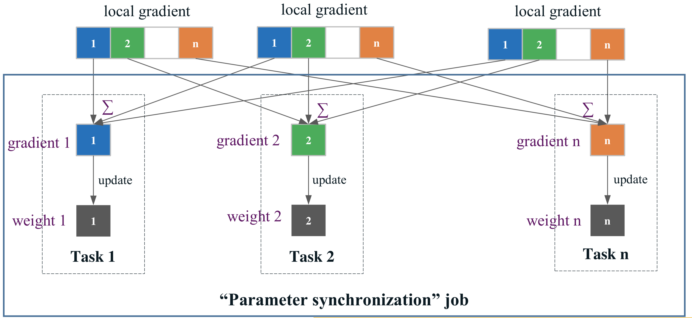

BigDL
Distributed Deep Learning on Apache Spark
Created by Marcin Stachowiak
Why?
grep?
cat file.txt | grep *.json | wc -l

Hadoop vs Spark
Why Spark?
Readability
Fast
Testability
Interactive
Standardization

Spark high level architecture
Spark Context
import org.apache.spark.SparkContext
import org.apache.spark.SparkContext._
import org.apache.spark.SparkConf
object SimpleApp {
def main(args: Array[String]) {
val conf = new SparkConf().setAppName("Simple App")
val sc = new SparkContext(conf)
}
}
Resilient Distributed Dataset (RDD)
"(...) a collection of elements partitioned across the nodes of the cluster that can be operated on in parallel."
val data = Array(1, 2, 3, 4, 5)
val data_rdd = sc.parallelize(data)
val data_rdd = sc.textFile("data.txt")
Resilient Distributed Dataset (RDD)
Transformations:
- map
- filter
- ...
val lineLengths = data_rdd.map(s => s.length)
Actions:
- count
- reduce
- ...
val totalLength = data_rdd.reduce((a, b) => a + b)
Directed Acyclic Graph (DAG)
DAG in Apache Spark is a set of Vertices and Edges, where vertices represent the RDDs and the edges represent the Operation to be applied on RDD.
BigDL is a distributed deep learning library for Apache Spark. With BigDL, users can write their deep learning applications as standard Spark programs, which can directly run on top of existing Spark or Hadoop clusters.
Technology and industry trends
1. Users are building more deeper and complex neural networks.
2. Real-world deep learning applications are complex big data pipelines.
3. Deep learning is increasingly adopted by the big data and data science community.
Why BigDL?
1. Rich deep learning support (TensorFlow, Keras, Caffe and Torch).
2. Extremely high performance (Intel MKL).
3. Efficiently scale-out.
Programming model
Data transformation
Resilient Distributed Dataset (RDD)
Users can efficiently load very large dataset and process the loaded data in a distributed fashion using Spark, and then feed the processed data into the analytics.
//load input data: (text, label) pairs
texts_rdd = spark.textFile("hdfs://...")
//convert text to list of words
words_rdd = texts_rdd.map(lambda text, label:
([w for w in to_words(text)], label))
Data transformation
N-dimensional array
The basic data elements used in neural network computations have been modeled as N-dimensional numeric (int8, float32, etc.) arrays.
val tensor = Tensor(2, 3)
tensor: com.intel.analytics.bigdl.tensor.Tensor =
0.0 0.0 0.0
0.0 0.0 0.0
[com.intel.analytics.bigdl.tensor.DenseTensor of size 2x3]
Data transformation
Sample
A Sample represents one record of your data set, which is comprised of feature and label.
val image = Tensor(3, 32, 32).rand
val label = 1f
val sample = Sample(image, label)
Model construction
Layers
Similar to Caffe, Torch and Keras, BigDL uses a dataflow representation for the neural network model.
val module = Sequential()
module.add(Linear(10, 25))
module.add(Linear(25, 10))
Model training
Optimizer
The distributed training process is modelled by the Optimizer abstraction, which runs multiple, iterative Spark jobs to minimize the loss.
optimizer = Optimizer(
model=lenet_model,
training_rdd=train_data,
criterion=ClassNLLCriterion(),
optim_method=SGD(learningrate=0.01),
end_trigger=MaxEpoch(15),
batch_size=batch_size)
Model training
Visualization
The summary data can then be visualized in TensorBoard or Jupyter Notebooks.
optimizer.set_train_summary(summary = TrainSummary(...))
Model training
Transfer learning
BigDL also allows users to directly use existing models (pre-trained by Caffe, Keras, TensorFlow, Torch or BigDL) in Spark.
val modelPath = "/tmp/model/model.pb"
val binPath = "/tmp/model/model.bin"
val inputs = Seq("Placeholder")
val outputs = Seq("output")
val model = Module.loadTF(modelPath, inputs, outputs,
ByteOrder.LITTLE_ENDIAN, Some(binPath))
Programming model
Data-parallel training
Parametr synchronization
Fragments
Hit the next arrow...
... to step through ...
... a fragmented slide.
Fragment Styles
There's different types of fragments, like:
grow
shrink
fade-out
fade-up (also down, left and right!)
current-visible
Highlight red blue green
Transition Styles
You can select from different transitions, like:
None -
Fade -
Slide -
Convex -
Concave -
Zoom
Themes
reveal.js comes with a few themes built in:
Black
(default) -
White
-
League
-
Sky
-
Beige
-
Simple
Serif
-
Blood
-
Night
-
Moon
-
Solarized
Slide Backgrounds
Set data-background="#dddddd" on a slide to change the background color. All CSS color
formats are supported.
Image Backgrounds
<section data-background="image.png">Tiled Backgrounds
<section data-background="image.png" data-background-repeat="repeat" data-background-size="100px">Video Backgrounds
<section data-background-video="video.mp4,video.webm">... and GIFs!
Background Transitions
Different background transitions are available via the backgroundTransition option. This one's called "zoom".
Reveal.configure({ backgroundTransition: 'zoom' })Background Transitions
You can override background transitions per-slide.
<section data-background-transition="zoom">Pretty Code
function linkify( selector ) {
if( supports3DTransforms ) {
var nodes = document.querySelectorAll( selector );
for( var i = 0, len = nodes.length; i < len; i++ ) {
var node = nodes[i];
if( !node.className ) {
node.className += ' roll';
}
}
}
}
Code syntax highlighting courtesy of highlight.js.
Marvelous List
- No order here
- Or here
- Or here
- Or here
Fantastic Ordered List
- One is smaller than...
- Two is smaller than...
- Three!
Tabular Tables
| Item | Value | Quantity |
|---|---|---|
| Apples | $1 | 7 |
| Lemonade | $2 | 18 |
| Bread | $3 | 2 |
Clever Quotes
These guys come in two forms, inline: The
nice thing about standards is that there are so many to choose from
and block:
“For years there has been a theory that millions of monkeys typing at random on millions of typewriters would reproduce the entire works of Shakespeare. The Internet has proven this theory to be untrue.”
Intergalactic Interconnections
You can link between slides internally, like this.
Speaker View
There's a speaker view. It includes a timer, preview of the upcoming slide as well as your speaker notes.
Press the S key to try it out.
Export to PDF
Presentations can be exported to PDF, here's an example:
Global State
Set data-state="something" on a slide and "something"
will be added as a class to the document element when the slide is open. This lets you
apply broader style changes, like switching the page background.
State Events
Additionally custom events can be triggered on a per slide basis by binding to the
data-state name.
Reveal.addEventListener( 'customevent', function() {
console.log( '"customevent" has fired' );
} );
Take a Moment
Press B or . on your keyboard to pause the presentation. This is helpful when you're on stage and want to take distracting slides off the screen.
Much more
- Right-to-left support
- Extensive JavaScript API
- Auto-progression
- Parallax backgrounds
- Custom keyboard bindings